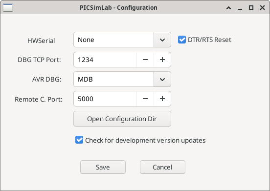

3.2 Configuration Window

The "PICSimLab - Configuration" window is an interface for configuring debugging and communication options. Here’s how to use each option:
- HWSerial: Defines the serial port to be used. The "None" option disables any connection and the other options listed are actual or virtual ports. This port can be used to connect the PICSimLab to other software.
- Debug TCP Port: Defines the TCP port used for remote debugging.
- AVR DBG: Defines the debugging protocol used for the AVR. The options are "gdb-avr" (GDB) and "microchip debugger" (MDB).
- Remote C Port: Defines the TCP port used for communication using the remote control protocol.
- Open Configuration Dir: Opens the directory where PICSimLab’s configurations are stored.
- Check for development version updates: Checks for available updates for the PICSimLab’s development version instead of the stable version.
- Save: Saves the settings.
- Cancel: Cancels the changes and closes the window.